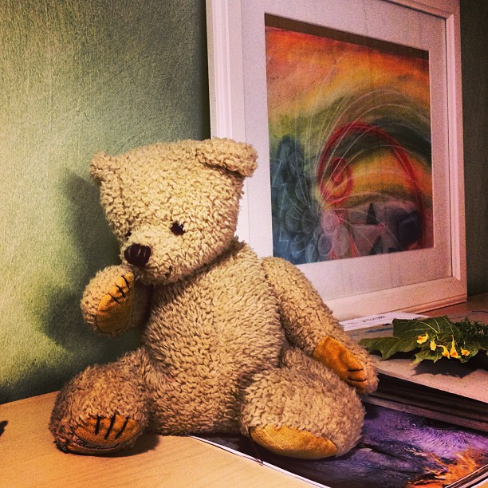

Vårt uppdrag är att skapa så goda förutsättningar som möjligt för ditt barns utveckling här på skolan.
Som förälder eller vårdnadshavare är du viktig och behövd. Du känner ditt barn allra bäst och vi välkomnar ditt engagemang!
Lärarna ansvarar för undervisningen och har det pedagogiska ansvaret, men resten av skolan bärs till stor del av föräldrarna och föräldraföreningen. Josefinaskolans föräldraförening är en länk mellan elevernas föräldrar och skolan. Det är en ideell förening som stödjer skolan och som arbetar för att främja skolans utveckling i waldorfpedagogisk anda.
Som förälder på skolan är du automatiskt och kostnadsfritt med i föreningen. Du har då möjlighet att delta på föreningens möten och kan därigenom vara med och påverka både föreningen och skolan.

En gång per termin har vi en göra-fint-dag då vi gör fint både inne i skolan och ute på skolgården. Vi målar, rensar rabatter, reparerar mindre saker, städar med mera. Det är ett bra tillfälle att lära känna varandra och varandras barn. Vi ordnar också en höstmarknad och en vårfest. Du kan också ingå i olika arbetsgrupper som i samarbete med skolan arbetar för att utveckla ett område, exempelvis trädgården, inomhusmiljön, städrutiner osv.
Städning
Av tradition är det föräldrarna som städar i en waldorfskola. Det har inte med ekonomi att göra utan ingår i pedagogiken. Att du är med och gör fint där ditt barn vistas hela dagarna ger en känsla av tillhörighet och insyn i ditt barns vardag. Det är ett engagemang som är viktigt för ditt barn. Och ett barn som har varit med sina föräldrar och städat, lär sig att vårda och vara rädd om sin skola.